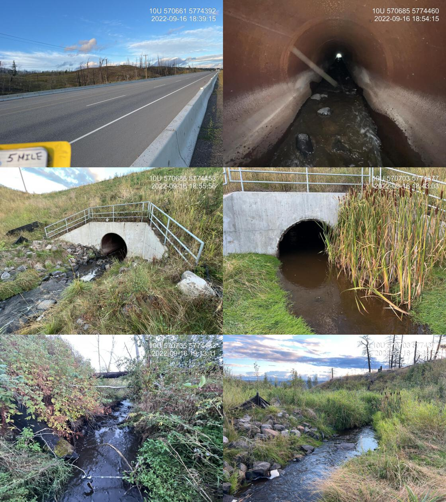

4 Results and Discussion
A summary of monitoring site locations and metrics are presented in Tables 4.1 and 4.2.
mon_sum_raw <- readr::read_csv('data/form_monitoring.csv') %>%
select(pscis_crossing_id,
stream_name,
road_name,
type = crossing_subtype,
zone = utm_zone,
easting,
northing,
diameter_or_span_m = diameter_or_span_meters,
length_or_width_m = length_or_width_meters,
dewatering:maintenance,
recommendations) %>%
mutate(diameter_or_span_m = janitor::round_half_up(diameter_or_span_m, 1))
# rename(site = pscis_crossing_id)
mon_sum_raw %>%
select(
pscis_crossing_id:length_or_width_m
) %>%
janitor::clean_names(case = "title") %>%
rename(
`Diameter or Span (m)` = `Diameter or Span m`,
`Length or Width (m)` = `Length or Width m`
) %>%
fpr::fpr_kable(caption_text = 'Summary of monitoring site locations and replacement structure specifications.',
scroll = F)| Pscis Crossing Id | Stream Name | Road Name | Type | Zone | Easting | Northing | Diameter or Span (m) | Length or Width (m) |
|---|---|---|---|---|---|---|---|---|
| 196200 | Bittner Creek | Forman Road | Bridge | 10 | 521567 | 5976182 | 21.0 | 5.5 |
| 198283 | Cross Creek | Babine Lake Road | Pipe Arch | 10 | 324806 | 60444069 | 6.0 | 14.0 |
| 198400 | Five Mile Creek | Highway 97 | Round Culvert | 10 | 570699 | 5774416 | 2.3 | 55.0 |
mon_metrics <- mon_sum_raw %>%
mutate(pscis_crossing_id = as.character(pscis_crossing_id)) %>%
# mutate(across(everything(), as.character)) %>%
select(
stream_name,
everything(),
-zone:-length_or_width_m
) %>%
janitor::clean_names(case = "title") %>%
tibble::rownames_to_column() %>%
pivot_longer(-rowname) %>%
pivot_wider(names_from=rowname, values_from=value) %>%
janitor::row_to_names(row_number = 1) %>%
janitor::clean_names(case = "title")
mon_metrics %>%
fpr::fpr_kable(caption_text = 'Summary of monitoring metric results.',
scroll = gitbook_on)| Stream Name | Bittner Creek | Cross Creek | Five Mile Creek |
|---|---|---|---|
| Pscis Crossing Id | 196200 | 198283 | 198400 |
| Road Name | Forman Road | Babine Lake Road | Highway 97 |
| Type | Bridge | Pipe Arch | Round Culvert |
| Dewatering | Wetted widths were very small in some locations due to low water levels however channel was still connected at the time of the survey. | Channel is watered all the way through at this point. Has filled in nicely since last year. | Channel flowing at bankfull channel width due to heavy rain in previous days. |
| Velocity | Similar to downstream and upstream at the time of survey as very little flow was present. | Similar to downstream and upstream although there are not defined stoneline riffle breaks yet. | Estimated to be slightly higher than upstream and downstream. Although pipe diameter is generally equivalent to average channel width. Addition of substrate within pipe structure would increase roughness and slow flows. |
| Constriction | Channel width under bridge was measured as an average of 4.6m between the riprap. Downstream average channel width was 8.2m and upstream was 6.4m. | Culvert does not appear to constricted channel. | Diameter of pipe is equivalent to the average of the upstream and downstream channel widths. |
| Substrate | Substrate equivalent to upstream and downstream and consists of primarily gravels and small cobbles. | Substrate is equivalent to upstream and downstream and consists of primarily gravels and small cobbles. | As the stream was turbed it was difficult to determine a subdominant substrate but by using a pole it appeared as though main channel was fines mixed in with boulders. Substrate within pipe was large cobbles. |
| Riparian | Downstream area adjacent to the bridge was lacking meaningful riparian vegetation due to a lack of shrub/tree installation into riprap areas during construction and the size of the channel in this location (due to infilling of historic large outlet pool). | Cuttings were installed on the upstream downstream sides of the gabion basket walls as well as immediately adjacent to the culvert. They appear to be growing at this point but year two and three will provide better indicators of survival/cover. | Riparian appears to have impacted by recent wildfire with widely spaced conifers dead. Vegetation within area of construction dominated by agronomic grasses. Upstream of construction area dominated by natural shrubs. |
| Uav Flight | no | yes | no |
| Flow Depth | Flow depths are shallow downstream of bridge where large deposit of gravel is located. Wondering if this gravel accumulated over the years when the culvert was in place and potentially restricting flows upstream resulting in deposition of gravels in this area. Channel restoration plan to maintain large outlet pool was not successful likley due to downstream transport of sediments that had accumulated upstream of the crossing. | Flow depths range from 4 - 7 cm at outlet and similar upstream. If there was a way to create more complexity in the substrate underneath the crossing there could be better holding areas for fish to move through. However that does not appear to be fish stacked up at the outlet and there are numerous spawning fish upstream. | Flow depths at outlet estimated as 30cm and deeper than rest of channel. At top of pipe depths were estimated at 10cm due to a lack of substrate. Similar depths to upstream throughout middle of pipe length. |
| Stability | Stable | Stable | Stable |
| Revegetation | Large amount of riprap adjacent to bridge should have been planted with rooted cuttings to promote meaningful riparian cover. Future opportunities could be explored for riparian restoration on the downstream river right bank where agricultural field is directly adjacent to the creek. | Red osier dogwood cuttings planted with in soil arched structure. More riparian plantings could have been placed upstream on the left and right banks as there is notable erosion there. However, natural recruitment of cottonwood occuring and will likely provide stability and long-term cover. | Numerous invasive weeds present includeing mullen and Canada Thistle. Vegetation within area of construction dominated by agronomic grasses. Upstream of construction area riparian is dominated by natural shrubs. Silt fencing should be removed from site. |
| Cover | There does not appear to be any habitat enhancements creating cover in the vicinity of the bridge. Reports related to project planning indicate that the historic outlet pool was meant to provide cover however this area has infilled with gravels. | Large woody debris was placed upstream of the crossing however they are small pieces of wood from half a metre to 3 m long and will not likely remain in the channel. Some boulders were placed upstream which will likely provide habitat complexity in the long term. | Overhanging vegetation and large woody debrid minimal within construction footprint. |
| Maintenance | No maintenance issues. The wetted channel is extremely small immediately downstream of the bridge where gravels have accumulated. This may be causing connectivity issues during dry times of year however perhaps this is part of typical dewatering in this system. | None | Recommend addition of large cobble and boulder substrate to pipe to increase channel roughness and facilitate upstream passage for small species/lifestages. Remove silt fencing used during construction. |
| Recommendations | Fish sampling to determine use of habitat by chinook salmon for spawning and rearing. As site is located within Prince George city boundaries, potential collaboration could include University of Northern BC and local First Nations. To encourage year round flows, in collaboration with local landowners/stewardship groups/First Nations, wetland area in agricultural area to the north (connected to first upstream tributary) should be assessed to determine if water storage could be increased. Assess rail crossing on CN line (19703286) and scope for constriction, beaver management activitities that may be promoting flushing of water through the area, channel incision and lowering of the water table. | Follow up recommended to determine success of naturally regenerating riparian cottonwood and cuttings planted within soil arched structure. | Addition of large cobble and boulder substrate to pipe at upstream end to facilitate channel roughness. Removal of silt fencing with construction footprint. |
4.1 Bittner Creek - 196200
PSCIS crossing 196200 on Bittner Creek is located on Foreman Road within the municiple boundaries of the City of Prince George approximately 0.7km upstream from the confluence with the Fraser River (Figures 2.1 - 4.2). In 2016, just downstream of the subject crossing, the banks of Bittner Creek were armoured to stabilize two areas of erosion (DWB Consulting Services Ltd. 2019). DWB Consulting Services Ltd. (2019) reported that to compensate for the net negative habitat balance of the project, the replacement of the culvert on Bittner Creek was included as a habitat enhancement in the habitat offsetting plan associated with permitting of the work. As part of that the offsetting design intended to maintain the plunge pool habitat that had been created downstream of the culvert by installing a rock weir on the upstream end of the pool.
At crossing 196200, Bittner Creek is a fourth order stream with a watershed area upstream of the crossing of approximately 40.1km2. The elevation of the watershed ranges from a maximum of 768m to 574m at the crossing (Table 4.3).
The subject site is the first stream crossing structure upstream of the Fraser River with numerous modelled and previously assessed stream crossing structures upstream. Upstream of the site approximately 400m there is a crossing modelled (modelled_crossing_id 19703286) on the Canadian National railway line. Although data related to the assessment of this crossing was not provided and has not been uploaded to the Provincial Stream Crossing Inventory Summary System (PSCIS), DWB Consulting Services Ltd. (2019) report that the “CN crossing is considered passable to fish”. There are numerous other unassessed modelled crossings and previously assessed crossings on the stream with PSCIS crossing 196197 located approximately 5km upstream of the subject crossing on Highway 16. Review of PSCIS database information indicates this crossing was dry at the time of assessment (August 9, 2014) and ranked as a barrier to upstream migration (unembedded, with slope of 2% and outlet drop of 40cm). Numerous wetland and lakes are mapped as upstream of the crossing covering a total area estimated at approximatley 40ha.

Figure 4.1: Map of Bittner Creek watershed.
Figure 4.2: Lidar generated digital elevation model of Bittner Creek at Foreman Road.
fpr::fpr_table_wshd_sum(site_id = my_site) %>%
fpr::fpr_kable(caption_text = paste0('Summary of derived upstream watershed statistics for PSCIS crossing ', my_site, '.'),
footnote_text = 'Elev P60 = Elevation at which 60% of the watershed area is above',
scroll = F)| Site | Area Km | Elev Site | Elev Min | Elev Max | Elev Median | Elev P60 | Aspect |
|---|---|---|---|---|---|---|---|
| 196200 | 40.1 | 574 | 565 | 768 | 682 | 676 | SSW |
| * Elev P60 = Elevation at which 60% of the watershed area is above |
# A summary of habitat modelling outputs is presented in Table \@ref(tab:tab-culvert-bcfp-196200) and a
fpr::fpr_table_bcfp(scroll = gitbook_on) 4.1.1 Crossing Characteristics
Before remediation, the Bittner Creek culvert at PSCIS crossing 196200 was documented as a 1.9m wide round culvert of 20m in length, having an outlet drop of 0.7m and a culvert slope of 1% (MoE 2023c). The crossing ranked as a barrier to upstream migration according to the provincial protocol (MoE 2011b) . Photos taken in 2014 - before the remediation was completed are included as Figure 4.3.
In 2022, the site was reassessed. As PSCIS crossing 196200 was a bridge it ranked as passable to upstream fish passage according to the provincial protocol (Table 4.4).
my_photo1 = fpr::fpr_photo_pull_by_str(site = '196200/before', str_to_pull = 'crossing')
my_caption1 = paste0('Photos of culverts on Cross Creek taken in August 2014 before remediation of site.')
knitr::include_graphics(my_photo1)Figure 4.3: Photos of culverts on Cross Creek taken in August 2014 before remediation of site.
| Location and Stream Data |
|
Crossing Characteristics | – |
|---|---|---|---|
| Date | 2022-08-26 | Crossing Sub Type | Bridge |
| PSCIS ID | 196200 | Diameter (m) | 21 |
| External ID | – | Length (m) | 6 |
| Crew | AI | Embedded | – |
| UTM Zone | 10 | Depth Embedded (m) | – |
| Easting | 521567.2 | Resemble Channel | – |
| Northing | 5976182 | Backwatered | – |
| Stream | Bittner Creek | Percent Backwatered | – |
| Road | Forman Road | Fill Depth (m) | – |
| Road Tenure | MoTi | Outlet Drop (m) | – |
| Channel Width (m) | – | Outlet Pool Depth (m) | – |
| Stream Slope (%) | – | Inlet Drop | – |
| Beaver Activity | – | Slope (%) | – |
| Habitat Value | – | Valley Fill | – |
| Final score | 0 | Barrier Result | Passable |
| Fix type | – | Fix Span / Diameter | – |
Photos: From top left clockwise: Road/Site Card, Barrel, Outlet, Downstream, Upstream, Inlet.
|
|||
| Comments: Effectiveness monitoring for MoTi. Adjacent landowner mentioned that in 30 years he has not seen salmon come to spawn and also indicated that the stream dewaters annually. |
4.1.2 Stream Characteristics
Habitat characteristics were gathered upstream and downstream of the Foreman Road bridge over Bittner Creek (Figure 4.2 and Table 4.5. Flows at the time of the survey were low with near dewatering throughout sections of stream surveyed both upstream and downstream. Water temperature was 15\(^\circ\)C, pH was 8.1 and conductivity was 432uS/cm. The landowner adjacent to the bridge (north-east side) was consulted to let them know that surveyors would be within the stream channel adjacent to their property. They reported that the stream dewatered completely on an annual basis and that they were not aware of use of the stream by Fraser River salmon.
Downstream of the bridge, the stream was surveyed for 100m. rfpr_my_habitat_paragraph(‘ds’)` The portion of creek immediately downstream of the bridge (20m) was lacking meaningful riparian vegetation due to a lack of shrub/tree installation into riprap areas during construction and the very wide channel width in this location. (due to infilling of historic large outlet pool).
tab_hab_summary %>%
filter(Site %like% my_site) %>%
fpr::fpr_kable(caption_text = paste0('Summary of habitat details for sites adjacent to PSCIS crossing ', my_site, ' on Bittner Creek.'),
scroll = F) | Site | Length Surveyed (m) | Channel Width (m) | Wetted Width (m) | Pool Depth (m) | Gradient (%) | Total Cover | Habitat Value |
|---|---|---|---|---|---|---|---|
| 196200_ds | 100 | 8.2 | 4.9 | – | 1 | moderate | medium |
| 196200_us | 130 | 6.3 | 2.5 | – | 1 | moderate | medium |
4.1.3 Discussion
Although DWB Consulting Services Ltd. (2019) noted that installation of a rock weir on the upstream end of the historic culvert outlet pool was planned to maintain this habitat feature, it is unclear if this occurred. Regardless, sediments have infilled the historic outlet pool and this area does not likely provide high or even moderate value habitat.
Flows in Bittner Creek were low at the time of assessment and the adjacent landowner reports seasonal dewatering of the stream. Nevetheless, numerous parr were observed within isolated pools upstream of the newly installed bridge and residual pools within intermittent systems can provide valuable habitat for juvenile salmon encouraging high growth rates and subsequent increased rates of overwinter survival (Ebersole et al. 2006; Wigington Jr et al. 2006; Maslin and McKinnev 1998). We recommend fish sampling to determine use of Bittner Creek habitats by chinook salmon for both spawning and rearing. As the site is located within Prince George city boundaries, potential collaborations could include programs involving University of Northern BC and local First Nations to understand not only fish health and movement but also overall watershed health including flow patterns and water temperatures. To encourage year round flows, in collaboration with local landowners/stewardship groups/First Nations, wetland area in the agricultural area to the north of the bridge (connected to first upstream tributary) should be assessed to determine if water storage could be increased by actions such as promoting beaver activity and infilling of historic drainage stuctures. The rail crossing located on the CN line (19703286) approximately 400m upstream of Foreman Road should be assessed for fish passage with the data gathered loaded to the PSCIS database. At the same time this area could be scoped for evidence of channel constriction, beaver management activities and other railway/agricultural land practices that may be promoting flushing of water through the area, channel incision and lowering of the water table.
my_photo1 = fpr::fpr_photo_pull_by_str(site = my_site, str_to_pull = '_d1_')
my_caption1 = paste0('Habitat downstream of PSCIS crossing ', my_site, ', on Bittner Creek.')
Figure 4.4: Habitat downstream of PSCIS crossing 196200, on Bittner Creek.
my_photo2 = fpr::fpr_photo_pull_by_str(site = my_site, str_to_pull = '_d2_')
my_caption2 = paste0('Habitat downstream of PSCIS crossing ', my_site, ', on Bittner Creek')
Figure 4.5: Habitat downstream of PSCIS crossing 196200, on Bittner Creek
my_caption <- paste0('Left: ', my_caption1, ' Right: ', my_caption2)
knitr::include_graphics(my_photo1)
knitr::include_graphics("fig/pixel.png")
knitr::include_graphics(my_photo2)my_photo1 = fpr::fpr_photo_pull_by_str(site = my_site, str_to_pull = '_pool_')
my_caption1 = paste0('Downstream view of location of historic outlet pool on Bittner Creek below Foreman Road which has filled with gravels due to culvert removal.')Figure 4.6: Downstream view of location of historic outlet pool on Bittner Creek below Foreman Road which has filled with gravels due to culvert removal.
my_photo2 = fpr::fpr_photo_pull_by_str(site = my_site, str_to_pull = '_fish1_')
my_caption2 = paste0('Salmonid parr observed upstream of bridge on Bittner Creek.')
Figure 4.7: Salmonid parr observed upstream of bridge on Bittner Creek.
my_caption <- paste0('Left: ', my_caption1, ' Right: ', my_caption2)
knitr::include_graphics(my_photo1)
knitr::include_graphics("fig/pixel.png")
knitr::include_graphics(my_photo2)my_photo1 = fpr::fpr_photo_pull_by_str(site = my_site, str_to_pull = '_u1_')
my_caption1 = paste0('Typical habitat upstream of Foreman Road bridge on Bittner Creek.')Figure 4.8: Typical habitat upstream of Foreman Road bridge on Bittner Creek.
my_photo2 = fpr::fpr_photo_pull_by_str(site = my_site, str_to_pull = '_u2_')
my_caption2 = paste0('Typical habitat upstream of Foreman Road bridge on Bittner Creek.')Figure 4.9: Typical habitat upstream of Foreman Road bridge on Bittner Creek.
4.2 Cross Creek - 198283
knitr::include_graphics("fig/elk_weigert_2022b.png")
# **Habitat Model Parameters**
# * Spawning max gradient: 5.0%#
# * Spawning discharge min (mean annual, m^3^/s): 0.05#
# * Spawning discharge max (mean annual, m^3^/s): 76.00#
# * Rearing max gradient: 7.0%#
# * Rearing discharge min (mean annual, m^3^/s): 0.02#
# * Rearing discharge max (mean annual, m^3^/s): 30.00PSCIS crossing 198283 on Cross Creek is located on Babine Lake Road, approximately 30km north-east (45 minute drive) of the town of Burns Lake (Figure 2.1). A map of the watershed (see modelled crossing id 500059) is provided in map attachment 093K.111. At the time of reporting, the mapping for the stream was slightly incorrect with the site located approximately 100m to the north of where shown in the BC freshwater atlas and within Babine Lake Marine Provincial Park - Pendleton Bay Site boundaries. The road is the responsibility of the Ministry of Transportation and Infrastructure.
PSCIS crossing 198283 was identified by the Lake Babine Nation, Dustin Snyder (Spruce City Wildlife Association) as a barrier to fish passage blocking sockeye attempting to spawn annually and brought to the attention of the Ministry of Transportation and Infrastructure. The Ministry of Transportation and Infrastructure worked together with Fisheries and Oceans Canada and Canadian Wildlife Federation to plan and implement replacement of the existing culverts with an open bottomed geotextile soil arched reinforced structure designed by Terratech Consulting Ltd in the summer of 2021. A short video documents the story here.
An impassible 9m falls is located on the mainstem of the stream approximately 1km upstream of Babine Lake Road (FINS Consulting Ltd. 2000; MoE 2023b). There are no other stream crossings modelled between the road and the falls. Upstream of the crossing lake chub, coho salmon, rainbow trout, kokanee, and sockeye salmon have been recorded (MoE 2023a; Norris [2018] 2023).
At crossing 198283, Cross Creek is a fourth order stream with a watershed area upstream of the crossing of approximately 34.8km2. The elevation of the watershed ranges from a maximum of 1263m to 722m at the crossing (Table 4.6).
fpr::fpr_table_wshd_sum(site_id = my_site) %>%
fpr::fpr_kable(caption_text = paste0('Summary of derived upstream watershed statistics for PSCIS crossing ', my_site, '.'),
footnote_text = 'Elev P60 = Elevation at which 60% of the watershed area is above',
scroll = F)| Site | Area Km | Elev Site | Elev Min | Elev Max | Elev Median | Elev P60 | Aspect |
|---|---|---|---|---|---|---|---|
| 198283 | 34.8 | 722 | 727 | 1263 | 1065 | 1047 | SSE |
| * Elev P60 = Elevation at which 60% of the watershed area is above |
4.2.1 Crossing Characteristics
Before remediation, the Cross Creek culverts at PSCIS crossing 198283 were documented as 1.8m wide ovals culverts of 12.4m in length, having an outlet drop of 0.45m and a culvert slope of 2% (MoE 2023c). The crossing ranked as a barrier to upstream migration according to the provincial protocol (MoE 2011b). Photos taken in 2017 - before the remediation was completed are included as Figure 4.10. In 2022, the site was reassessed. As PSCIS crossing 198283 was a newly installed open bottomed structure it ranked as a passable to upstream fish passage according to the provincial protocol (Table 4.7).
my_photo1 = fpr::fpr_photo_pull_by_str(site = '198283/before', str_to_pull = 'crossing')
my_caption1 = paste0('Photos of culverts on Cross Creek taken in November 2017 before remediation of site.')
knitr::include_graphics(my_photo1)
Figure 4.10: Photos of culverts on Cross Creek taken in November 2017 before remediation of site.
| Location and Stream Data |
|
Crossing Characteristics | – |
|---|---|---|---|
| Date | 2022-08-28 | Crossing Sub Type | Pipe Arch |
| PSCIS ID | 198283 | Diameter (m) | 6 |
| External ID | – | Length (m) | 14 |
| Crew | Ai MW | Embedded | – |
| UTM Zone | 9 | Depth Embedded (m) | – |
| Easting | 324806 | Resemble Channel | – |
| Northing | 6044069 | Backwatered | – |
| Stream | Cross Creek | Percent Backwatered | – |
| Road | Babine Lake Road | Fill Depth (m) | – |
| Road Tenure | MoTi | Outlet Drop (m) | – |
| Channel Width (m) | – | Outlet Pool Depth (m) | – |
| Stream Slope (%) | – | Inlet Drop | – |
| Beaver Activity | – | Slope (%) | – |
| Habitat Value | – | Valley Fill | – |
| Final score | 0 | Barrier Result | Passable |
| Fix type | – | Fix Span / Diameter | – |
Photos: From top left clockwise: Road/Site Card, Barrel, Outlet, Downstream, Upstream, Inlet.
|
|||
| Comments: Effectiveness monitoring for MoTi. Channel has filled in nicely since last year. Numerous sockeye holding upstream and downstream of the crossing. Multiple large dead spawn out sockeye present. Live cuttings installed within riparian area appear to be growing however year two and three will be better indicators of success for revegetation. |
Surveys were conducted with a remotely piloted aircraft upstream of the crossing with resulting images stitched into an orthomosaic and 3-dimensional model presented in Figures 4.11 - 4.12.
Stream Characteristics
The dominant substrate was gravels with cobbles sub-dominant.Total cover amount was rated as moderate with undercut banks dominant. Cover was also present as small woody debris, large woody debris, and overhanging vegetation.The average channel width was 6m, the average wetted width was 3m, and the average gradient was 1.2%. Water temperature was 13\(^\circ\)C, pH was 8 and conductivity was 168uS/cm.
model_url <- '<iframe src="https://www.mapsmadeeasy.com/maps/public/bc05b8efed3f42f28fced92614b08edd" scrolling="no" title="Maps Made Easy" width="100%" height="600" frameBorder ="0"></iframe>'
knitr::asis_output(model_url)my_photo = 'fig/pixel.png'
my_caption = paste0('Orthomosaic of newly installed open bottomed structure on Cross Creek.')
knitr::include_graphics(my_photo, dpi = NA)Figure 4.11: Orthomosaic of newly installed open bottomed structure on Cross Creek.
model_url <- '<iframe src="https://www.mapsmadeeasy.com/maps/public_3D/bc05b8efed3f42f28fced92614b08edd" scrolling="no" title="Maps Made Easy" width="100%" height="600" frameBorder ="0"></iframe>'
knitr::asis_output(model_url)my_photo = 'fig/pixel.png'
my_caption = paste0('3D model of newly installed open bottomed structure on Cross Creek.')
knitr::include_graphics(my_photo, dpi = NA)Figure 4.12: 3D model of newly installed open bottomed structure on Cross Creek.
tab_hab_summary %>%
filter(Site == '198283_ds') %>%
fpr::fpr_kable(caption_text = paste0('Summary of habitat details for area surveyed downstream of PSCIS crossing ', my_site, ' on Cross Creek as well as within the replacement open bottomed structure (198283_x).'),
scroll = F) | Site | Length Surveyed (m) | Channel Width (m) | Wetted Width (m) | Pool Depth (m) | Gradient (%) | Total Cover | Habitat Value |
|---|---|---|---|---|---|---|---|
| 198283_ds | 100 | 6 | 3 | 0.2 | 1.2 | moderate | high |
4.2.2 Discussion
Overall, the restoration of fish passage at Cross Creek appears to be successful demonstrating meaningful collaboration between numerous groups including Lake Babine Nation, Spruce City Wildlife Association, the Ministry of Transportation and Infrastructure, Fisheries and Oceans Canada and Canadian Wildlife Federation. The streambed appears to be filling in well following one year of flows since restoration and at the time of assessment in 2022, numerous sockeye and kokanee were observed spawning upstream of the crossing. Follow up is recommended in 2023 to determine success of naturally regenerating riparian cottonwood seedlings as well as cuttings planted within the soil arched structure.
my_photo1 = fpr::fpr_photo_pull_by_str(site = my_site, str_to_pull = '_d2_')
my_caption1 = paste0('Typical habitat downstream of PSCIS crossing ', my_site, 'in Cross Creek showing high value spawning gravels.')Figure 4.13: Typical habitat downstream of PSCIS crossing 198283in Cross Creek showing high value spawning gravels.
my_photo2 = fpr::fpr_photo_pull_by_str(site = my_site, str_to_pull = '_d3_')
my_caption2 = paste0('Typical habitat downstream of PSCIS crossing ', my_site, ' in Cross Creek.')Figure 4.14: Typical habitat downstream of PSCIS crossing 198283 in Cross Creek.
my_caption <- paste0('Left: ', my_caption1, ' Right: ', my_caption2)
knitr::include_graphics(my_photo1)
knitr::include_graphics("fig/pixel.png")
knitr::include_graphics(my_photo2)my_photo1 = fpr::fpr_photo_pull_by_str(site = my_site, str_to_pull = '_u1_')
my_caption1 = paste0('Habitat upstream of PSCIS crossing ', my_site, ' in Cross Creek.')
Figure 4.15: Habitat upstream of PSCIS crossing 198283 in Cross Creek.
my_photo2 = fpr::fpr_photo_pull_by_str(site = my_site, str_to_pull = 'embankment')
my_caption2 = paste0('Habitat immediately upstream of PSCIS crossing ', my_site, ' in Cross Creek.')Figure 4.16: Habitat immediately upstream of PSCIS crossing 198283 in Cross Creek.
4.3 Five Mile Creek - 198400
PSCIS crossing 198400 is located on Five Mile Creek under Highway 97 approximately 11km east of Williams Lake within the San Jose River watershed group (Figures 2.1 - 4.18. The structure is located within the boundaries of the Williams Lake 1 First Nation Reservation. The area around Five Mile Creek is home to T’exelcemc people of the T’exelc First Nation. The T’exelc First Nation (also known as the Williams Lake Indian Band) is part of the larger Secwepemc (Shuswap) Nation with traditional territory covering a vast area of central British Columbia. Secwepemctsin is the language of the Secwepem. It contains the cultural, ecological, and historical knowledge connecting the land and the people (T’exelcemc 2023; First Peoples’ Cultural Council 2023). The Five Mile Creek watershed upstream of the Highway encompasses three other First Nations reserve areas including Five Mile 3, James Louis 3A and Carpenter Mountain 15. Replacement of the historic structure (900mm round culvert) in 2016 was necessary to four-laneing Highway 97.

Figure 4.17: Map of Five Mile Creek watershed.
Figure 4.18: Lidar generated digital elevation model of Five Mile Creek at Highway 97.
Five Mile Creek flows into Borland Creek approximately 800m downstream of the highway then into the San Jose River a further 2.1km downstream. The San Jose River in turn empties into Williams Lake approximately 4.5km downstream of the highway. Although apparently a rare occurrence, due to impacts to Williams Creek which drains Williams Lake, there are reports of sockeye salmon ascending from the Fraser River to Williams Lake and in theory spawning in the San Jose River. It is thought that these fish are from the Quesnel stock (Williams Lake Tribune 2022).
On Five Mile Creek Between the highway and the San Jose River there are two previously unassessed crossings modelled as closed bottom structures. The first (modelled_crossing_id 17500597) is modelled as 300m downstream and the second (modelled_crossing_id 17500595) is modelled as located approximately 1km downstream. There are numerous unassessed modelled crossings upstream of the highway as well as four dams documented between approximately 4km and 10km upstream of the highway.
At crossing 198400, Five Mile Creek is a fourth order stream with a watershed area upstream of the crossing of approximately 63.1km2. The elevation of the watershed ranges from a maximum of 1061m to NAm at the crossing (Table 4.9). Upstream of the crossing sucker (general), longnose sucker, white sucker, largescale sucker, chub (general), peamouth chub, northern pikeminnow, longnose dace, leopard dace, redside shiner, burbot, lake whitefish, all pacific salmon, pink salmon, coho salmon, rainbow trout, kokanee, sockeye salmon, brook trout, and lake trout have been recorded (MoE 2023a; Norris [2018] 2023). Numerous lakes and wetlands are located in the Five Mile Creek watershed including Dugan Lake (96ha), Goldpan Lake (41ha) and Cariboo Bill Lake (30ha).
On assignment from Ministry of Transportation and Infrastructure in 2010, Triton Environmental Consultants Ltd. (2014) captured rainbow trout downstream of the culvert with minimal effort however no fish were captured upstream of the crossing with 108 seconds of electrofishing effort. Caribou Envirotech Ltd. (2005) sampled Five Mile Creek and an unnamed lake (00089SAJR) located approximately 5km upstream of the highway to provide information related to planning for construction of a dam on the lake. They documented taht the portion of Five Mile Creek located immediately downstream of the unnamed lake was a man-made ditch divided into drainage channels for water dispersal downstream. The noted that water temperatures were likely to be very high in the summer months and ranked the habitat value as “very poor”.
fpr::fpr_table_wshd_sum(site_id = 999) %>%
fpr::fpr_kable(caption_text = paste0('Summary of derived upstream watershed statistics for PSCIS crossing ', '198400 on Five Mile Creek.'),
footnote_text = 'Elev P60 = Elevation at which 60% of the watershed area is above',
scroll = F)| Site | Area Km | Elev Site | Elev Min | Elev Max | Elev Median | Elev P60 | Aspect |
|---|---|---|---|---|---|---|---|
| 999 | 63.1 | – | – | 1061 | 938 | 927 | S |
| * Elev P60 = Elevation at which 60% of the watershed area is above |
4.3.1 Crossing Characteristics
Although not documented in the PSCIS database, before remediation, Triton Environmental Consultants Ltd. (2014) reported that the Five Mile Creek culvert at PSCIS crossing 198400 was a 1.0m diameter, 45m long, round, non-embedded culvert with a gradient of 3% and ranked as a barrier to upstream migration according to the provincial protocol (MoE 2011b). However, Triton Environmental Consultants Ltd. (2014) also reported that the culvert was “likely passable to adult fish during most flow conditions with the exceptions of freshet or flood flow”.
The highway crossing on Five Mile Creek was assessed on September 16, 2022. PSCIS crossing 198400 was embedded 80cm at the outlet of the culvert with no embeddedness at the inlet. Due to the length of the 2.25m diameter round pipe (55m), a lack of embeddedness and culvert slope (3%) the structure ranked as a barrier to upstream fish passage according to the provincial protocol (Table 4.7).
fpr::fpr_table_cv_summary_memo(dat = pscis_phase1, site = 17501664, col_filter = my_crossing_reference)| Location and Stream Data |
|
Crossing Characteristics | – |
|---|---|---|---|
| Date | 2022-09-16 | Crossing Sub Type | Round Culvert |
| PSCIS ID | – | Diameter (m) | 2.25 |
| External ID | 17501664 | Length (m) | 55 |
| Crew | AI | Embedded | Yes |
| UTM Zone | 9 | Depth Embedded (m) | 0.4 |
| Easting | 570699 | Resemble Channel | Yes |
| Northing | 5774416 | Backwatered | No |
| Stream | Five Mile Creek | Percent Backwatered | – |
| Road | Highway 97 | Fill Depth (m) | 8 |
| Road Tenure | MoTi | Outlet Drop (m) | 0 |
| Channel Width (m) | 2.1 | Outlet Pool Depth (m) | 0.1 |
| Stream Slope (%) | 5 | Inlet Drop | No |
| Beaver Activity | No | Slope (%) | 3 |
| Habitat Value | Medium | Valley Fill | Deep Fill |
| Final score | 21 | Barrier Result | Barrier |
| Fix type | Add Substrate to Further embed the CBS | Fix Span / Diameter | – |
| Photos: From top left clockwise: Road/Site Card, Barrel, Outlet, Downstream, Upstream, Inlet. | |||
| Comments: MoTi effectiveness monitoring site. Culvert has been replaced with horizontally drilled pipe. Outlet of the culvert is embedded 80 cm. It is only the top 2 1/2 m of pipe that is not fully embedded with natural substrate. Although this culvert may score as a barrier with the Provincial metric conditions within the pipe are very similar to those upstream within the natural step-pool channel. |
4.3.2 Stream Characteristics
Upstream of the highway, the stream was surveyed for m. The average channel width was 2.3m, the average wetted width was 2.1m, and the average gradient was 5.2%.The dominant substrate was fines with boulders sub-dominant.Total cover amount was rated as moderate with undercut banks dominant. Cover was also present as boulders and overhanging vegetation. Water temperature was 10.8\(^\circ\)C, pH was 8.3 and conductivity was 814uS/cm. Total cover amount was rated as moderate with undercut banks dominant. Cover was also present as boulders and overhanging vegetation.The dominant substrate was fines with boulders sub-dominant.The average channel width was 2.3m, the average wetted width was 2.1m, and the average gradient was 5.2%. (Table 4.11). At the time of the survey flows were high (bankfull depth) due to recent rain events and the water was very turbid. Habitat value was assessed as low due to poor water quality and the small size of the stream.
tab_hab_summary %>%
filter(Site %like% my_site) %>%
fpr::fpr_kable(caption_text = paste0('Summary of habitat details for ara surveyed upstream of PSCIS crossing ', my_site, ' on Five Mile Creek.'),
scroll = F) | Site | Length Surveyed (m) | Channel Width (m) | Wetted Width (m) | Pool Depth (m) | Gradient (%) | Total Cover | Habitat Value |
|---|---|---|---|---|---|---|---|
| 198400_us | – | 2.3 | 2.1 | 0.5 | 5.2 | moderate | – |
4.3.3 Discussion
Five Mile Creek is a small system utilized by rainbow trout near the highway. High levels of turbidity noted during the site visit along with past reporting by Caribou Envirotech Ltd. (2005), Triton Environmental Consultants Ltd. (2014) indicate that the area upstream of the crossing had been impacted by fire, cattle use of riparian areas and the installation of dams and associated water drainage structures.
Replacement of crossing structures for small streams on large highways can be extremely expensive, requiring significant resources and time to complete. Although not ideal for facilitating upstream fish migration, horizontal drilling of pipes (versus the installation of open bottom structures) can help reduce costs related to construction and proper embedding of these pipes with substrate similiar to that found in adjacent natural reaches can provide conditions suitable for upstream fish migration. Although the highway crossing ranked as a barrier to upstream migration, embedding the pipe for its full length would result in a ranking of “potential” barrier and likely provide channel roughness conditions suitable for all life stages of rainbow trout to migrate upstream. For this reason we recommend the addition of large cobble and boulder substrate at the upstream end of the pipe. We also recommend that silt fencing installed for erosion and sediment control during construction be removed at the same time.
my_photo1 = fpr::fpr_photo_pull_by_str(site = my_site, str_to_pull = '_u1_')
my_caption1 ='Habitat within construction footprint upstream of PSCIS crossing 198400 in Five Mile Creek.'
Figure 4.19: Habitat within construction footprint upstream of PSCIS crossing 198400 in Five Mile Creek.
my_photo2 = fpr::fpr_photo_pull_by_str(site = my_site, str_to_pull = '_u2_')
my_caption2 = 'Habitat upstream of construction footprint adjacent to crossing 198400 in Five Mile Creek.'
Figure 4.20: Habitat upstream of construction footprint adjacent to crossing 198400 in Five Mile Creek.